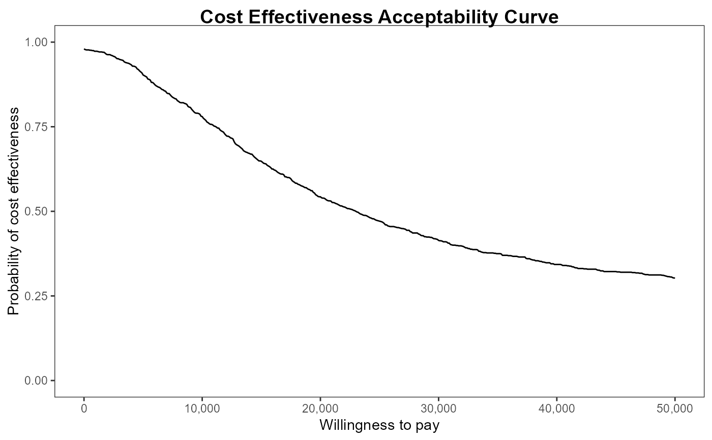
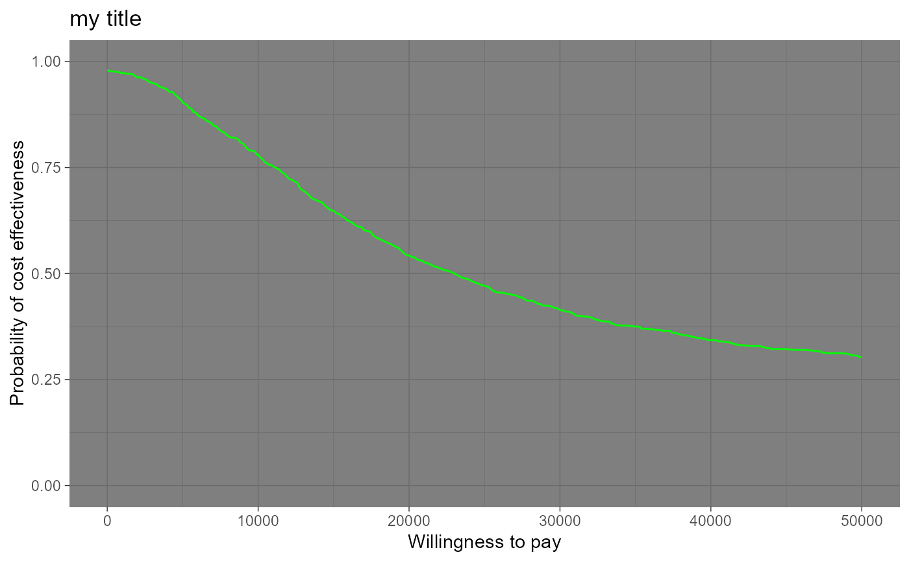
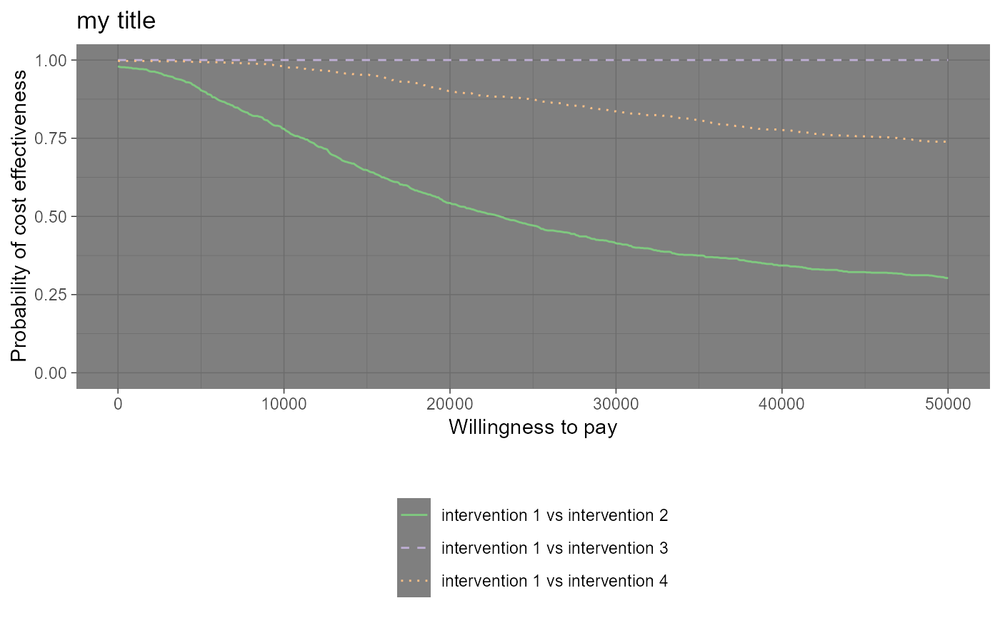

Produces a plot of the Cost-Effectiveness Acceptability Curve (CEAC) against the willingness to pay threshold.
Arguments
- he
A
bceaobject containing the results of the Bayesian modelling and the economic evaluation.- comparison
Selects the comparator, in case of more than two interventions being analysed. Default as NULL plots all the comparisons together. Any subset of the possible comparisons can be selected (e.g.,
comparison=c(1,3)orcomparison=2).- pos
Parameter to set the position of the legend (only relevant for multiple interventions, ie more than 2 interventions being compared). Can be given in form of a string
(bottom|top)(right|left)for base graphics andbottom|top|left|rightfor ggplot2. It can be a two-elements vector, which specifies the relative position on the x and y axis respectively, or alternatively it can be in form of a logical variable, withFALSEindicating to use the default position andTRUEto place it on the bottom of the plot.- graph
A string used to select the graphical engine to use for plotting. Should (partial-)match the three options
"base","ggplot2"or"plotly". Default value is"base". Not all plotting functions have a"plotly"implementation yet.- ...
If
graph = "ggplot2"and a named theme object is supplied, it will be passed to the ggplot2 object. The usual ggplot2 syntax is used. Additional arguments:line = list(color): specifies the line colour(s) - all graph types.line = list(type): specifies the line type(s) asltynumeric values - all graph types.line = list(size): specifies the line width(s) as numeric values - all graph types.currency: Currency prefix to willingness to pay values - ggplot2 only.area_include: logical, include area under the CEAC curves - plotly only.area_color: specifies the AUC colour - plotly only.
Value
- ceac
If
graph = "ggplot2"a ggplot object, or ifgraph = "plotly"a plotly object containing the requested plot. Nothing is returned whengraph = "base", the default.
The function produces a plot of the cost-effectiveness acceptability curve against the discrete grid of possible values for the willingness to pay parameter. Values of the CEAC closer to 1 indicate that uncertainty in the cost-effectiveness of the reference intervention is very low. Similarly, values of the CEAC closer to 0 indicate that uncertainty in the cost-effectiveness of the comparator is very low.
Details
The CEAC estimates the probability of cost-effectiveness, with respect to a given willingness to pay threshold. The CEAC is used mainly to evaluate the uncertainty associated with the decision-making process, since it enables the quantification of the preference of the compared interventions, defined in terms of difference in utilities. Formally, the CEAC is defined as:
$$\textrm{CEAC} = P(\textrm{IB}(\theta) > 0)$$
If the net benefit function is used as utility function, the definition can be re-written as
$$\textrm{CEAC} = P(k \cdot \Delta_e - \Delta_c > 0)$$
effectively depending on the willingness to pay value \(k\).
References
Baio G, Dawid aP (2011). “Probabilistic sensitivity analysis in health economics.” Stat. Methods Med. Res., 1--20. ISSN 1477-0334, doi:10.1177/0962280211419832 , https://pubmed.ncbi.nlm.nih.gov/21930515/.
Baio G (2013). Bayesian Methods in Health Economics. CRC.
Examples
data("Vaccine")
he <- BCEA::bcea(eff, cost)
#> No reference selected. Defaulting to first intervention.
ceac.plot(he)
ceac.plot(he, graph = "base")
ceac.plot(he, graph = "ggplot2")

ceac.plot(he, graph = "plotly")
ceac.plot(he, graph = "ggplot2",
title = "my title",
line = list(color = "green"),
theme = ggplot2::theme_dark())

## more interventions
he2 <- BCEA::bcea(cbind(eff, eff - 0.0002), cbind(cost, cost + 5))
#> No reference selected. Defaulting to first intervention.
mypalette <- RColorBrewer::brewer.pal(3, "Accent")
ceac.plot(he2, graph = "ggplot2",
title = "my title",
theme = ggplot2::theme_dark(),
pos = TRUE,
line = list(color = mypalette))

ceac.plot(he, graph = "base", title = "my title", line = list(color = "green"))
 ceac.plot(he2, graph = "base")
ceac.plot(he2, graph = "base")
 ceac.plot(he2, graph = "plotly", pos = "bottom")
ceac.plot(he2, graph = "plotly", pos = "bottom")